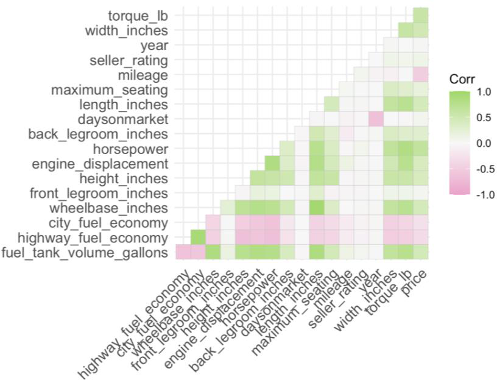

A month-long, daily-submission Kaggle competition to forecast used-car prices from listing data — and a case study in what happens when a low training error doesn't survive contact with unseen data.
Given two datasets of used-car listings (AnalysisData.csv for training, ScoringData.csv for the leaderboard), the task was to predict each car's sale price as accurately as possible. Accuracy was measured by Root Mean Squared Error (RMSE) on Kaggle's held-out scoring set — meaning a model had to generalize, not just fit the training data well. The competition ran for a month with daily submissions, so the real problem wasn't just "build a model" — it was building a workflow that could iterate quickly, diagnose why a promising model underperformed, and keep improving under a hard deadline.
Every submission followed the same four-stage pipeline, refined daily based on what the previous day's Kaggle score revealed.
Imputed missing values (mean/median), grouped records by make_name, and extracted numeric signal from text fields like torque. Ran a correlation matrix (ggcorrplot) across all numeric predictors to guide feature choices.
Converted categorical variables — body type, fuel type, dealer status, and more — into dummy variables so they could feed into both linear and tree-based models.
Progressed from a single-predictor linear model through multi-predictor linear regression to random forest (rf), then ranger and xgboost, tuning mtry, min.node.size, tree count, and splitting rule at each pass.
Compared training/test RMSE against the actual Kaggle score every day. When the two diverged sharply, treated it as a generalization problem to investigate — not a model to abandon.

The single biggest insight didn't come from the best model — it came from watching training performance and leaderboard performance disagree, repeatedly, across 19 submissions.
ranger forest, mtry = 12, 1,000 treesmin.node.size = 2, variance splitting rule, importance ranked by impuritytrainDatNote on sourcing: the written report narrates this best result as "Model 19," but the submission log lists that exact score (3,420) and configuration against entry #18, with entry #19 scoring 3,492. Both figures come directly from the source documents — this page shows the numbers as logged rather than resolving the numbering discrepancy.
What this project changes about how I'd approach a pricing or forecasting problem in a business setting.
A model that looks excellent on training and test splits can still fail on genuinely unseen data. Any pricing or forecasting model I hand off needs validation against data as close as possible to real deployment conditions, not just a held-out slice of the same source.
The gap between internal RMSE and the Kaggle score was the most useful diagnostic in the whole project. In practice, a widening gap between validation and live performance is an early warning worth building monitoring around — before it becomes a stakeholder-facing surprise.
The best-scoring model wasn't the most complex one tried, and some of the more elaborate feature sets underperformed simpler configurations. When advising on a model for a business audience, I'd default to the simplest version that hits the accuracy bar, since it's easier to explain, audit, and maintain.